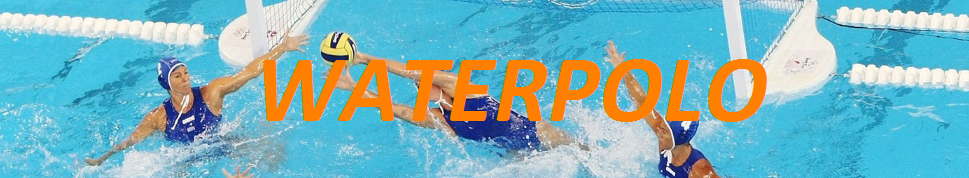
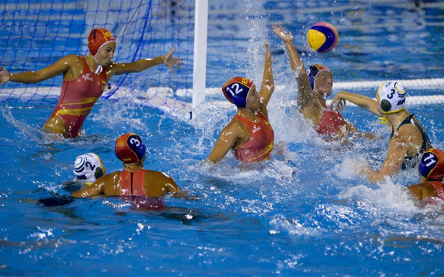
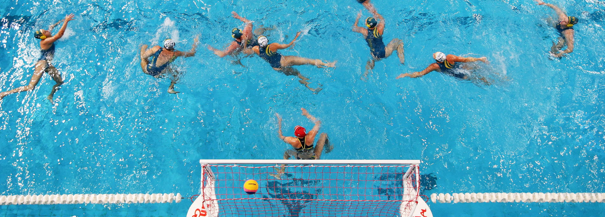
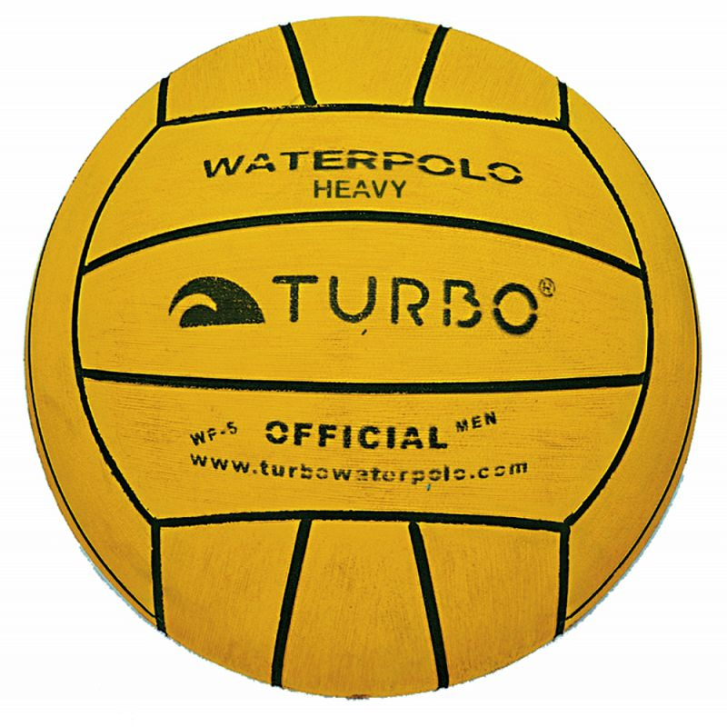

|  |
| El waterpolo o polo acuático es un deporte que se practica en una piscina, en la cual se enfrentan dos equipos. El objetivo del juego es marcar el mayor número de goles en la portería del equipo contrario, durante el tiempo que dura el partido. Los equipos cuentan en el agua con 6 jugadores y un portero. Se diferencian por el color del gorro (generalmente, blanco los locales, azul el equipo visitante y rojo los porteros). Existen faltas, expulsiones temporales y expulsiones definitivas. Un partido se divide en cuatro tiempos de juego efectivo (cuando la pelota está en juego) de 8 minutos cada uno. Los jugadores no pueden pisar el suelo de la piscina, ya que está prohibido y generalmente la profundidad de la piscina no se los permite. Los jugadores tienen que mantenerse todo el partido flotando, lo que les hace consumir mucha energía. Un equipo tiene 30 segundos de posesión de la pelota para efectuar un lanzamiento a la portería contraria. |
 |
| Índice: |
|
|  |
| A nivel reglamentario se utilizan las mismas reglas para el Campeonato de waterpolo del mundo que las aplicadas en los Juegos Olímpicos. Las dimensiones que debe tener la piscina para desarrollar competiciones internacionales deben ser de 30 metros de largo por 20 metros de ancho y una profundidad de 1,80 m. En el caso del waterpolo femenino las medidas son un poco menores y las piscinas miden 25 metros de largo por 17 metros de ancho. El balón oficial del campeonato de waterpolo es de tamaño similar a una pelota de fútbol convencional, la diferencia es el material con la que se confecciona. Las pelotas son de y tienen un peso aproximado de 400 gramos y la medida de la circunferencia es de unos 70 centímetros. |
 |
| Si desea volver a la página principal haz clic aquí |